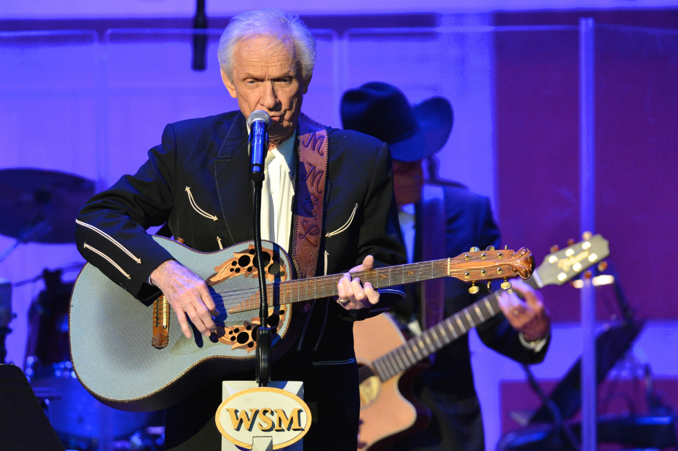

Log out
Muere Mel Tillis, leyenda de la música country
Según señaló su agente, Don Murry Grubbs, el músico falleció a los 85 años por una falla respiratoria.

El famoso cantante de música country Mel Tillis, conocido por temas como como I Ain't Never y Coca-Cola Cowboy, falleció este domingo a los 85 años, confirmó su publicista.
El músico habría fallecido por una falla respiratoria en el Munroe Regional Medical Center de Ocala, en Florida, señaló su agente, Don Murry Grubbs en un comunicado.
"Tillis luchó contra problemas intestinales desde comienzos de 2016 y nunca se recuperó", indicó.
Padre de seis hijos, grabó más de 60 álbumes, y más de 600 de sus canciones fueron interpretadas por los mayores exponentes del género a lo largo de una carrera que se extendió durante seis décadas.
También apareció en programas televisivos y en películas, como Smokey and the Bandit II (1980) y Every Which Way but Loose (1978), junto a Clint Eastwood.
En 2012, el entonces presidente de Estados Unidos, Barack Obama, le otorgó la Medalla nacional de las Artes.